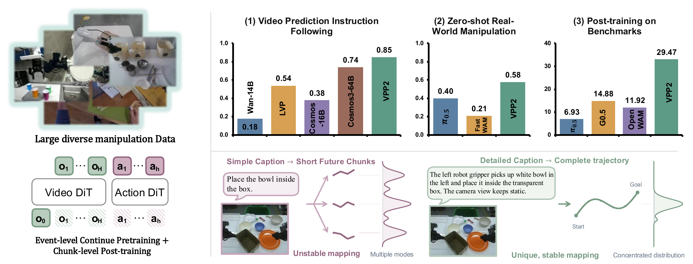
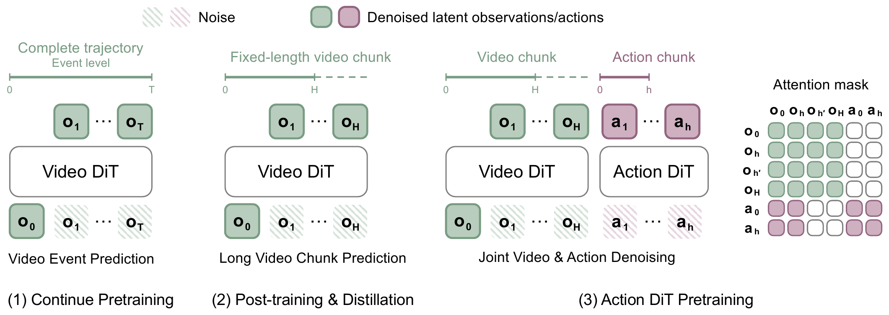
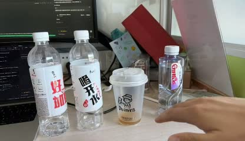
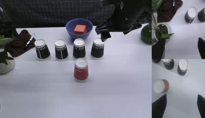
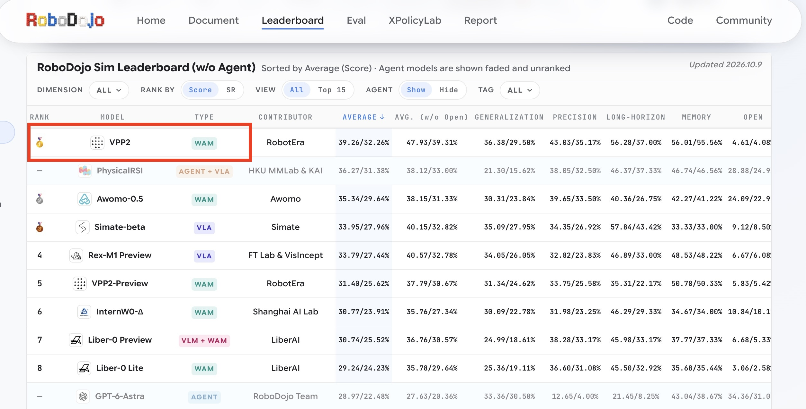
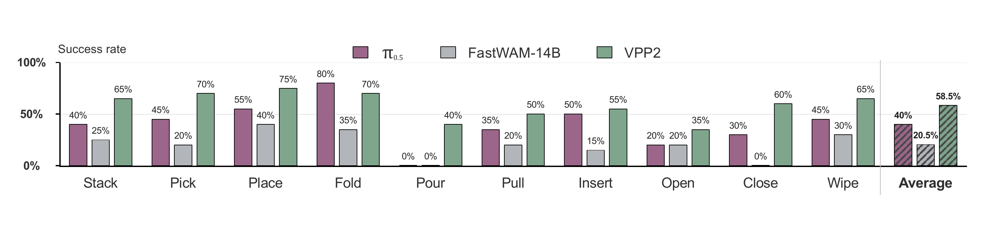

We introduce Video Prediction Policy 2 (VPP2), a WAM that enables strong zero-shot generalization in both video prediction and action generation.
The whole pipeline:
(1) First, we curate a large-scale, diverse dataset of manipulation videos to continue pretraining the base video foundation model. We annotate video clips with detailed captions and perform event-level video pretraining to promote generalization across open-ended manipulation tasks.
(2) Second, we post-train and distill the video model into a single-step visual planner with fixed prediction horizon.
(3) Finally, we introduce an action module via a mixture-of-transformers (MoT) architecture to learn an implicit inverse dynamics model.
Strong performance: VPP2 outperforms Cosmos3-64B by 11% on instruction-following tasks in open-ended video prediction and ranks #1 on the RoboDojo Benchmark after post-training.
Open-World Manipulation Video Prediction
Video predictions of human-hand and robot-arm manipulation in open environments.
Human-hand manipulation
Robot-arm manipulation
Faithful Instruction Following
Video predictions from Wan2.1-I2V-14B, Cosmos3-Super-64B, and VPP2 given the same initial frame and different instructions.
Model comparison
Initial frame
Instruction
Wan2.1-I2V-14B
Cosmos3-Super-64B
VPP2 (Ours)

Place the second bottle from the left in front of the leftmost bottle.
Place the leftmost bottle in front of the cup.
Place the cup in front of the leftmost cup.
Initial frame
Instruction
Wan2.1-I2V-14B
Cosmos3-Super-64B
VPP2 (Ours)

Stack the red paper cup on the leftmost black cup.
Stack the red paper cup on the second black cup from the left.
Rank #1 after post-training on RoboDojo Benchmark (2026.10)

One-Step Video Generation for Fast Inference
Pretraining and After Distillation
PretrainingAfter Distillation
PretrainingAfter Distillation
Zero-Shot Real-World ALOHA

Citation
If you find VPP2 useful for your research, we would appreciate it if you could cite our paper. Download BibTeX
@misc{guo2026videopredictionpolicy2,
title = {Video Prediction Policy 2: Predict Better, Act Better},
author = {Yanjiang Guo and Haodong Yan and Zhide Zhong and Zhongru Zhang and
Qingyuan Yang and Qingzhou Lu and Xiaoyu Chen and Yen-Jen Wang and
Shuying Deng and Chenghan Yang and Puzhen Yuan and Chenxin Liu and
Tun Ban and Xiang Zhu and Yichen Liu and Kun Feng and Haoang Li and
Jianyu Chen},
year = {2026},
eprint = {2610.10270},
archivePrefix = {arXiv},
primaryClass = {cs.CV},
url = {https://arxiv.org/abs/2610.10270}
}